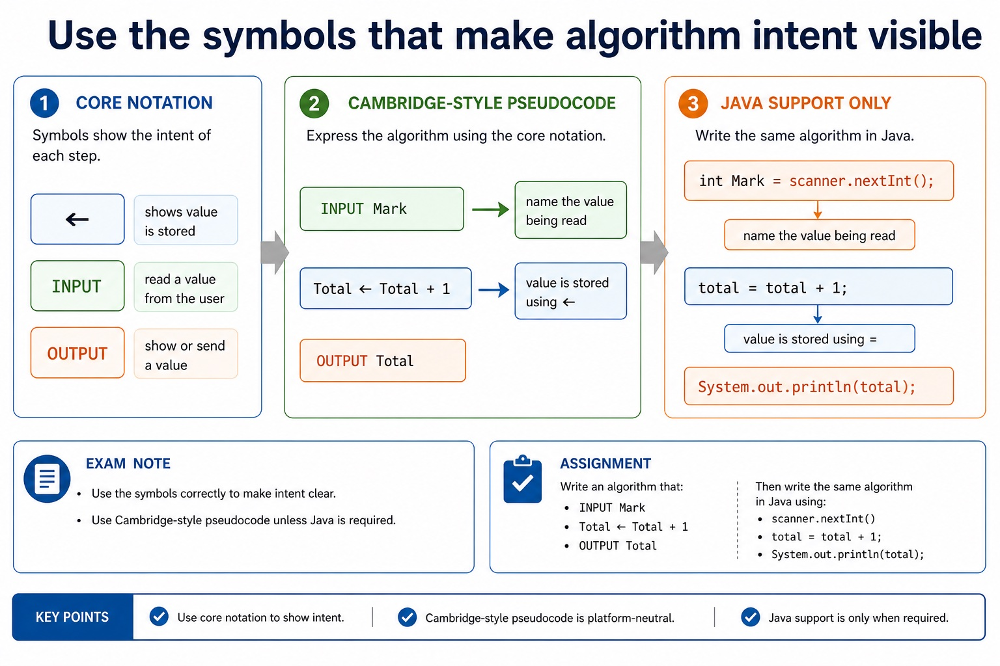
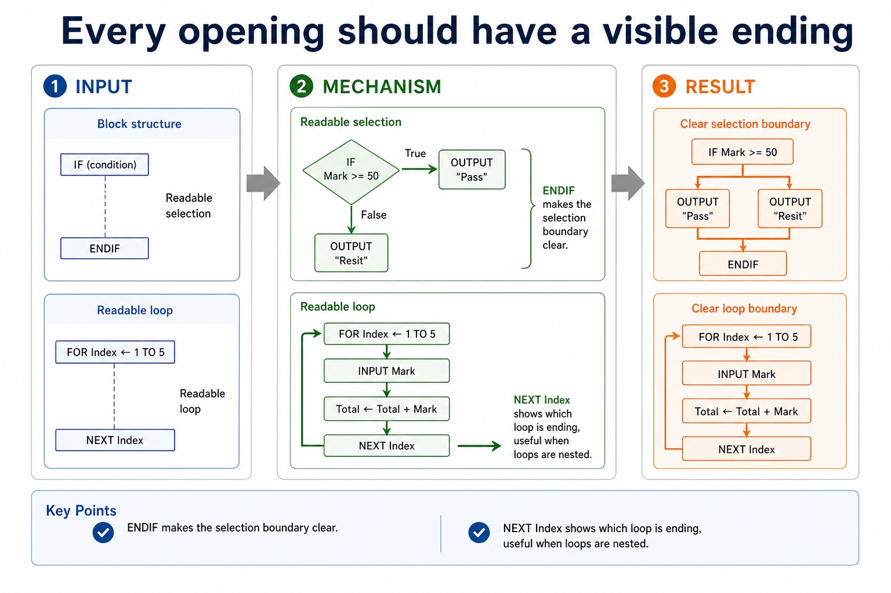
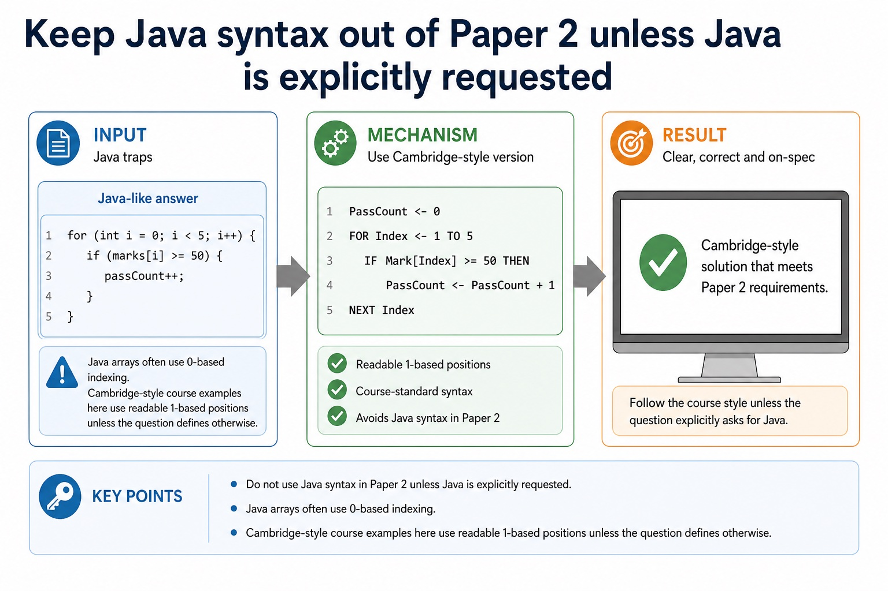

Cambridge pseudocode is the exam answer format. Java can support implementation practice, but Paper 2
rewards clear algorithm expression: assignment arrows, readable identifiers, correct block endings,
indentation and logic that a marker can follow without running a compiler.
UseCambridge-style assignment, input, output, selection and loop notation
Improvereadability through indentation, identifiers and block endings
ConvertJava-like fragments into exam-appropriate pseudocode
Cambridge-style
Total <- Total + Mark
IF Mark >= 50 THEN
OUTPUT "Pass"
ENDIF
Java support only
total = total + mark;
if (mark >= 50) {
System.out.println("Pass");
}
Same logic, different answer style. In Paper 2, make the algorithm readable first.
Why this matters
Cambridge-style marking rewards clear intent. Ambiguous braces, missing ENDIFs or overwritten variables can hide correct logic.
Common trap
A runnable Java answer is not automatically a good Paper 2 pseudocode answer. Syntax habits can cost clarity marks.
Warm-up hook
Which line looks most like Cambridge-style assignment?
The algorithm adds `Mark` to `Total`. Choose the clearest Paper 2 style.
Choose the notation that clearly assigns a new value to Total.
Core notation
Use the symbols that make algorithm intent visible
Idea
Cambridge-style pseudocode
Java support only
Exam note
Assignment
`Total <- Total + 1`
`total = total + 1;`
`<-` shows value is stored
Input
`INPUT Mark`
`scanner.nextInt()`
name the value being read
Output
`OUTPUT Total`
`System.out.println(total);`
state what is displayed
Selection
`IF ... THEN ... ELSE ... ENDIF`
`if (...) { ... } else { ... }`
close the block clearly
Loops
`FOR ... NEXT` / `WHILE ... ENDWHILE`
`for (...) {}` / `while (...) {}`
show loop boundaries
Chinese support: assignment = 赋值；indentation = 缩进；block ending = 代码块结束标记。
Use the symbols that make algorithm intent visible

Use the symbols that make algorithm intent visible: source-grounded visual explanation.
Lesson fact: Core notation
Lesson fact: Cambridge-style pseudocode
Lesson fact: Java support only
Lesson fact: Exam note
Lesson fact: Assignment
Lesson fact: Total <- Total + 1
Lesson fact: total = total + 1;
Lesson fact: <- shows value is stored
Lesson fact: INPUT Mark
Lesson fact: scanner.nextInt()
Lesson fact: name the value being read
Lesson fact: OUTPUT Total
Block structure
Every opening should have a visible ending
Readable selection
IF Mark >= 50 THEN
OUTPUT "Pass"
ELSE
OUTPUT "Resit"
ENDIF
`ENDIF` makes the selection boundary clear.
Readable loop
FOR Index <- 1 TO 5
INPUT Mark
Total <- Total + Mark
NEXT Index
`NEXT Index` shows which loop is ending, useful when loops are nested.
Every opening should have a visible ending

Every opening should have a visible ending: source-grounded visual explanation.
Lesson fact: Block structure
Lesson fact: Readable selection
Lesson fact: IF Mark >= 50 THEN
Lesson fact: OUTPUT "Pass"
Lesson fact: OUTPUT "Resit"
Lesson fact: ENDIF makes the selection boundary clear.
Lesson fact: Readable loop
Lesson fact: FOR Index <- 1 TO 5
Lesson fact: INPUT Mark
Lesson fact: Total <- Total + Mark
Lesson fact: NEXT Index
Lesson fact: NEXT Index shows which loop is ending, useful when loops are nested.
Readability
A marker should not need detective training
Feature
Weak answer
Improved answer
Why it helps
Identifier
`x`, `y`, `z`
`Mark`, `Total`, `PassCount`
purpose is visible
Indentation
all lines aligned
nested lines indented
block ownership is clear
Output position
inside loop by accident
after loop when final result required
avoids repeated output
Condition
`IF good THEN`
`IF Mark >= 50 THEN`
test is precise
A marker should not need detective training
A marker should not need detective training: source-grounded visual explanation.
Lesson fact: Readability
Lesson fact: Weak answer
Lesson fact: Improved answer
Lesson fact: Why it helps
Lesson fact: Identifier
Lesson fact: x, y, z
Lesson fact: Mark, Total, PassCount
Lesson fact: purpose is visible
Lesson fact: Indentation
Lesson fact: all lines aligned
Lesson fact: nested lines indented
Lesson fact: block ownership is clear
Java traps
Keep Java syntax out of Paper 2 unless Java is explicitly requested
Java-like answer
for (int i = 0; i < 5; i++) {
if (marks[i] >= 50) {
passCount++;
}
}
Cambridge-style version
PassCount <- 0
FOR Index <- 1 TO 5
IF Mark[Index] >= 50 THEN
PassCount <- PassCount + 1
ENDIF
NEXT Index
Java arrays often use 0-based indexing. Cambridge-style course examples here use readable 1-based positions unless the question defines otherwise.
Keep Java syntax out of Paper 2 unless Java is explicitly requested

Keep Java syntax out of Paper 2 unless Java is explicitly requested: source-grounded visual explanation.
Lesson fact: Java traps
Lesson fact: Java-like answer
Lesson fact: for (int i = 0; i < 5; i++) {
Lesson fact: if (marks[i] >= 50) {
Lesson fact: passCount++;
Lesson fact: Cambridge-style version
Lesson fact: PassCount <- 0
Lesson fact: FOR Index <- 1 TO 5
Lesson fact: IF Mark[Index] >= 50 THEN
Lesson fact: PassCount <- PassCount + 1
Lesson fact: NEXT Index
Lesson fact: Java arrays often use 0-based indexing. Cambridge-style course examples here use readable 1-based positions unless the question defines otherwise.
Conversion routine
Convert meaning first, syntax second
1. State the goalExample: input five marks and count how many are at least 50.
2. Choose variables`Mark`, `Index`, `PassCount` are clearer than `m`, `i`, `pc` in first drafts.
LayoutIndent block contents and show where each selection or loop ends.
ClarityChoose meaningful identifiers and avoid Java-only punctuation unless asked.
Homework
Clear tasks for consolidation
Task 1: ConversionConvert this Java-like fragment into Cambridge-style pseudocode: `if (mark >= 50) { passCount++; }`.Task 2: Readability editRewrite a 6-line algorithm using meaningful variable names, correct indentation and visible block endings.Task 3: Mini algorithmWrite Cambridge-style pseudocode to input 5 marks, total them, and output the final total.